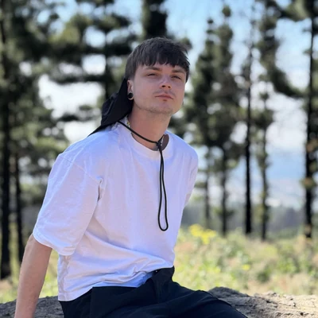
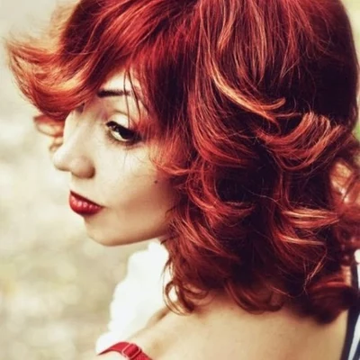
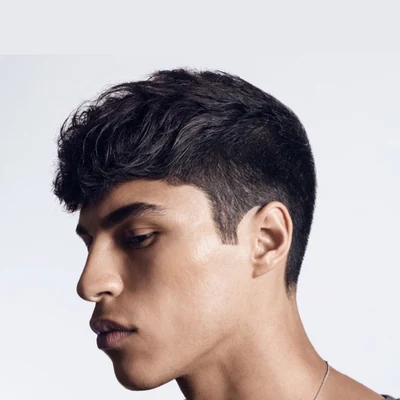

Master · Fryzjer męski
Barber Wladyslaw
Strzyżenia męskie i dziecięce, praca nożyczkami i maszynką, strzyżenie brody oraz wizyty z dojazdem.
Strzyżenie, koloryzacja i stylizacja włosów.

Master · Fryzjer męski
Strzyżenia męskie i dziecięce, praca nożyczkami i maszynką, strzyżenie brody oraz wizyty z dojazdem.

Master · Fryzjer / stylista
Wspólny profil zespołu. Strzyżenia damskie i męskie, modelowanie, koloryzacja, refleksy i pielęgnacja włosów.

Profil indywidualny
O dostępne usługi i terminy wizyt zapytaj bezpośrednio w salonie przy ul. Łuckiej 18.